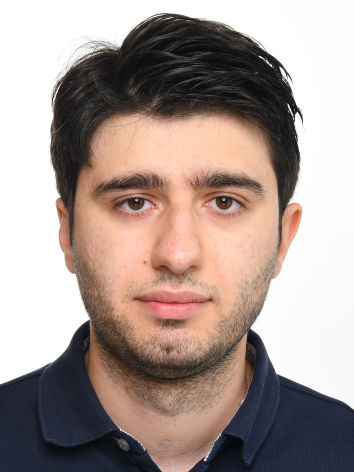

toghs at mpi<insert minus sign>sws.org

Since 1 April 2025, I have been a postdoctoral researcher within the ERC Synergy Grant “DynAMiCs” between the MPI-SWS and the IRIF, working with Valérie Berthé on decision problems lying at the intersection of dynamical systems theory, logic, and number theory. I received my doctoral degree from Saarland University and the MPI-SWS in 2024 (co-receiving the Ackermann Award 2025 for my dissertation), and my bachelor's and master's degrees from the University of Oxford in 2019. Here are my CV and dblp entry.